Analysis of Sorting Algorithms using Random Comparators
Analysis of algorithms is generally restricted to complexity analysis. Which ignores all factors of an algorithm which don’t affect the asymptotic behaviour. Many of those factors can be important for understanding the behaviour in general. This post will demonstrate a possibility for better analyzing the finer details of algorithms.
In reverse engineering, the implementation details may be critical to understanding or reproducing how some algorithm works. Timing analysis and fuzz testing are effective at reconstruction an algorithm if only a black box was available, but fail to provide any new insight into a known algorithm.
The technique proposed in this post will have parallels to both traditional analysis and reverse engineering. It will be possible to analyze a black box, but having access to known algorithms that are related is also essential. Like with fuzz testing, we will be pulling more information out of an algorithm by giving it unexpected inputs.
Assuming that our input to a sorting algorithm is well formed, all sorting correct
algorithms must result in the same output. So in order to analyze sorting algorithms
as a black box, we must abuse the input somehow. Generally, sorting algorithms require total order
for all elements of the array. The notation of > and < is not necessarily built-in
for the elements in the array, though. So many implementations will expect a comparator
(a function the takes two elements and returns the relation between them).
The algorithms we will be analyzing will expect a comparator like:
-1 if x < y
C(x,y) = 0 if x = y
1 if x > y
And we will be breaking all of the conditions of total order:
- Totality: a <= b or b <= a
- Antisymmetry: if a >= b and b <= a, a = b
- Transitivity: if a >= b and b >= c, a >= c
By defining a random comparator.
c(x,y) = uniformly randomly select from [-1,0,1]
Inspiration
In a tangential conversation on
Hacker News, RKoutnik figured out
the problem with using code like arr.sort(()=>Math.floor(Math.random()*3)-1) to
shuffle an array.
The problem with this is that it does not actually shuffle the array, it randomly sorts it 1. The first element may often stay where it is. As most sorting algorithms try to avoid unneccessary swaps, seems reasonable.
Also, a blog post from Mike Bostock inspired the graphs. I am going with “inspired” despite that they are nealy identical copies of his style of graph, because at the time of writing I couldn’t remember where I saw that type of graph from so I simply did what looked good.
Warning / Expectations
The standard method of algorithmic analysis using Big O notation might be useful to know before reading, but is not strictly necessary as this will not contain any references to Big O after this. However, some familiarity with the various sorting algorithms is almost a necessity; there will be enough different algorithms covered that trying to understand all of them in one sitting might be challenging. However, the implementation of every algotihm is shown and links to wikipedia are provided so it should be possible to learn enough to follow if you are determined. If you have taken any introductory CS classes that had a section on sorting algorithms you should be fine.
Code for all of the sorts will be included because knowing how the exact implementation details is essential to understanding the graphs we will be using. If you would prefer to skip the code sections, you should be mostly fine if you don’t want a deep understanding.
This is a fairly lengthy read; it should take around an hour to read thoroughly if you know most of the pure sorting algorithms.
Github
All of the code used to make the visualizations, the generated images, and the article itself are on Github.
If you find an issue (like a typo or broken link), please file an issue or submit a pull request.
Histogram
Because we will be using randomness, a single input array could become one of many output arrays. So we will need a method to describe the probability distribution of the output.
So we will be using a 2D histogram (think 2D array of probabilities)2 where each
element histogram[x][y] is the probability of the element at arr[x] ending up
at arr[y] after the algorithm finishes.
And that will be displayed as an image with each pixel (or group of pixels)
representing an element h[x][y] and using hue to represent its value. Purple will
be the highest probabilities and red will be the lowest probabilities. One important
thing to note is that the colors are only relevant to a single graph. The same color
on two different graphs can represent very different probabilities. This is ok for
this application because we will only be doing qualitative analysis on a single
graph at a time.
The full scale looks like:
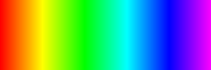
For example, a histogram of an algorithm that does nothing looks like:
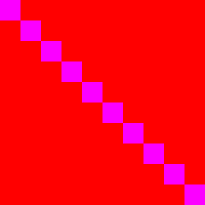
Each element has a 100% chance of staying where it is.
And for an algorithm that reverses the array would look like:
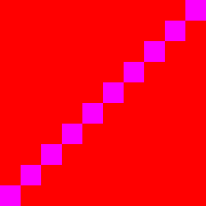
Each element has a 100% chance of moving to arr[n-1-x].
These histograms can be constructed by running the algorithm N times and counting
how many times each element ends up in each location.
function hist(n,sort){
// Make an empty nxn array and empty array
var h = (new Array(n).fill(0)).map(()=>(new Array(n)).fill(0));
var arr = (new Array(n)).fill(0);
var randomComparator = ()=>Math.floor(Math.random()*3-1);
// Run the sort 100000 times
for(var i = 0; i < 100000; i++){
arr = arr.map((_,i)=>i); // convert each element into its index
sort(arr,randomComparator);
for(var k = 0; k < n;k++){
// Use the initial index (the value of the cell) and the final index (k) to update the histogram
h[arr[k]][k]++;
}
}
return h;
}
This can also generate a histogram of a blackbox such as Chrome’s implementation of Array.sort.
hist(300,(arr,comp)=>arr.sort(comp));
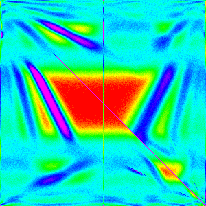
You are not expected to understand the pattern in that yet, but by the end of the post you should be able to.
Simple Sorts
Here the simple sorts: Bubble sort, Insertion Sort and Selection sort will provide the introduction to matching known sorts to their histograms. These sorts are quite simple and have relatively easy to understand graphs.
Note: Varying array lengths n are used shown because some of the features of the
graph may be clearer at a lower resolution.
| n | 10 | 30 | 50 | 100 | 300 |
|---|---|---|---|---|---|
| Bubble | 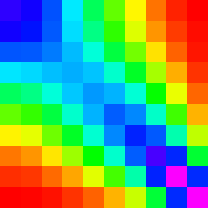 | 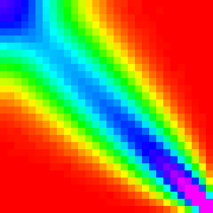 | 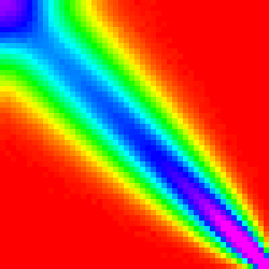 | 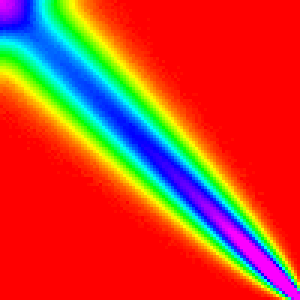 | 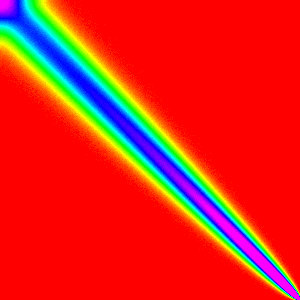 |
| Insertion | 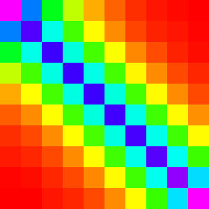 | 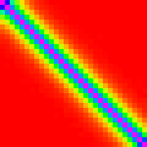 | 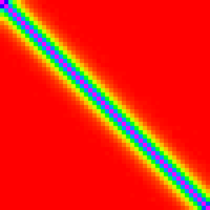 | 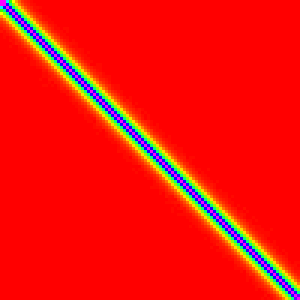 | 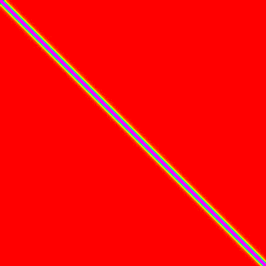 |
| Selection | 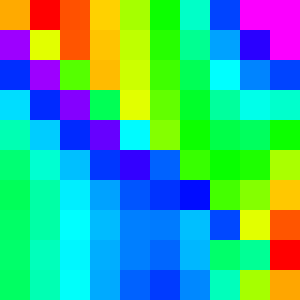 | 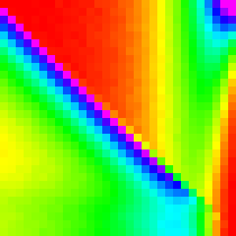 | 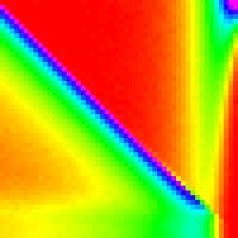 | 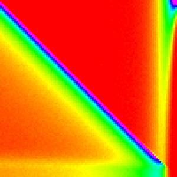 | 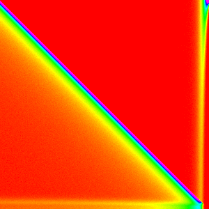 |
Bubble Sort
Bubble sort compares and swaps each pair of elements a[k] and a[k+1] in
successive n passes over the array.
The implementation I made was as follows:
function bubbleSort(arr,comp){
for(let i = arr.length-1; i > 0; i--){ // The top j elements are sorted after j loops
for(let k = 0; k < i; k++){ // Bubble from 0 to i
if(comp(arr[k],arr[k+1]) > 0){ // If arr[k] > arr[k+1]
[arr[k],arr[k+1]] = [arr[k+1],arr[k]]; // Swap arr[k] and arr[k+1]
}
}
}
}
The most striking thing about the graph is that the high points in the graph are mostly in a line from the top left to the bottom right. This should be expected because bubble sort will not be changing the order much because the random comparison is as about as likely to move an element up as down (in the middle of the array). What is more surprising is that it quite asymmetric; the distribution narrows from the top to the bottom and near the top corner it flares a little.
The distribution narrowing is due to an optimization that allows bubble sort to
not repeatedly compare the top elements. Because after the ith interation the top
i elements will be in there final position, this implementation stops when it gets
to that point. As a result, the elements at the top of the array have less of a
chance to move than the bottom ones.
The flairing that is most prominent in the n=30 graph is mostly due to the bottom
elements getting jumbled many times before they get to settle into their final positions
so they have time to get close to randomly shuffled.
Insertion Sort
Insertion sort sorts by consecutively inserting (preserving sortedness) into a[0:j]
(a sorted array by iteration j).
The implementation I made was as follows:
function insertionSort(arr,comp){
// Build a sorted array 1 element at a time.
for(let i = 1; i < arr.length; i++){
// Insert into the sorted array arr[0:i]
for(let k = i; k > 0; k--){
if(comp(arr[k-1],arr[k]) > 0){ // If arr[k-1] > arr[k]
[arr[k],arr[k-1]] = [arr[k-1],arr[k]];// Swap arr[k-1] and arr[k]
}else{
// arr[0:i+1] is sorted and is ready for the next interation
break;
}
}
}
}
Insertion Sort has an incredibly simple graph. Most elements stay close to where
they were initially with a nearly constant deviation. This is because each element
compares with the one just below it and stays in place 2⁄3 of the time. So each
element has a exponetially decaying by 1/3^d (where d is distance from starting
position for most elements, the edges are slightly more complicated). My display
system is not accurate enough to see when d > ~5; so we can only see a slight
change is distribution at the first and last elements.
A good execersise to check your understanding is to see if you can calculate the probability of the first element staying in place is.
Selection Sort
Selection sorts selects the largest element (by linear search)
and swaps it with the n-i position for n iterations.
The implementation I made was as follows:
function selectionSort(arr,comp){
// Build a sorted array 1 element at a time.
for(let i = 0; i < arr.length; i++){
// Select the smallest element in arr[i:n-1]
let j = i;
for(let k = i+1; k < arr.length; k++){
if(comp(arr[j],arr[k]) > 0){
j = k;
}
}
// And swap it with the bottom of arr[i]
[arr[i],arr[j]] = [arr[j],arr[i]];
}
}
Selection Sort is definitely the most interesting of these first three sorting algorithms.
The first element almost always comes from the end of the array, because they are
the last ones considered and thus have a ~1/3 chance of being picked each. Then for
the 0th element is now at the end of the array and is the most likely pick. This
continues down the line until the end of the array was more likely to be picked
than to have this type of pattern hold.
Therefore if we change if(comp(arr[j],arr[k]) > 0){ to if(comp(arr[j],arr[k]) >= 0){,
then the ~1/3 should change to ~2/3 and the behaviour at the end should narrow.
The exact cutoff point for the switch between the two patterns is a little more complicated to derive and will be left out for the sake of brevity.
Complex / Efficient Sorts
Now that we have gotten a taste for what sorting algorithms look like we can move onto the more advanced sorts: Heap Sort, Merge Sort and Quick Sort. Here is where we can start to expect to see some similarities to the implementations of Array.sort
| n | 10 | 30 | 50 | 100 | 300 |
|---|---|---|---|---|---|
| Heap | 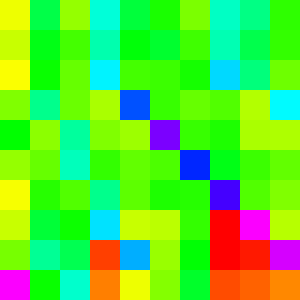 | 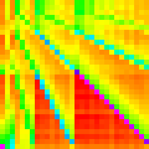 | 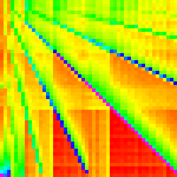 | 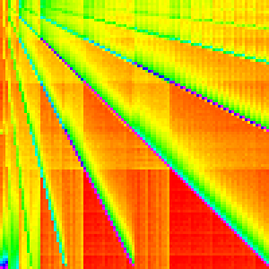 | 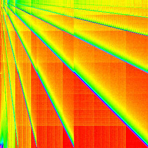 |
| Merge | 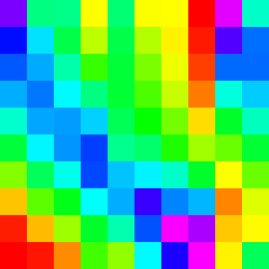 | 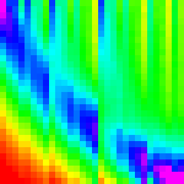 | 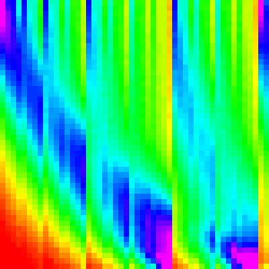 | 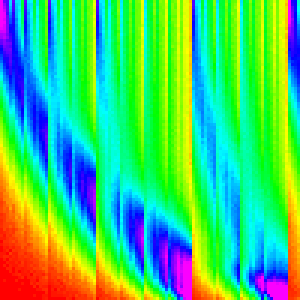 | 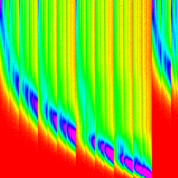 |
| Quick | 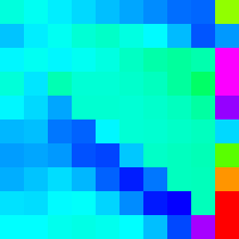 | 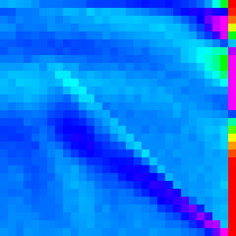 | 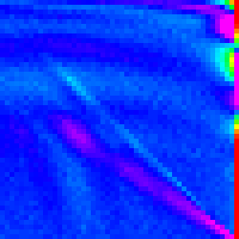 | 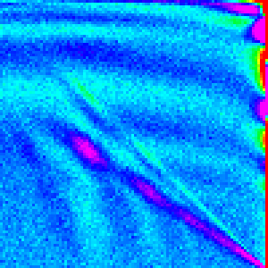 | 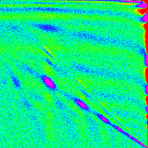 |
Composition of independent sub-parts
In order to deaply understand these more complex algorithms, we are going to separate them into independent parts. Steps are considered independent if the output from the comparator used in one does not affect the other.
For example, bubbleSort is fully separable, each iteration of the two outside loops does not depend on the comparator. It could be equivilantly be written out as a bunch of independent ifs.
function bubbleSort(arr,comp){
for(let i = arr.length-1; i > 0; i--){ // The top j elements are sorted after j loops
for(let k = 0; k < i; k++){ // Bubble from 0 to i
if(comp(arr[k],arr[k+1]) > 0){ // If arr[k] > arr[k+1]
[arr[k],arr[k+1]] = [arr[k+1],arr[k]]; // Swap arr[k] and arr[k+1]
}
}
}
}
Alternatively, the inner loop of selection sort is not separable. j depends on
the result of a comparison and therefore is inseparable.
function selectionSort(arr,comp){
// Build a sorted array 1 element at a time.
for(let i = 0; i < arr.length; i++){
// Select the smallest element in arr[i:n-1]
let j = i;
for(let k = i+1; k < arr.length; k++){
if(comp(arr[j],arr[k]) > 0){
j = k;
}
}
// And swap it with the bottom of arr[i]
[arr[i],arr[j]] = [arr[j],arr[i]];
}
}
One important thing to note here is that our separation is only valid because we are using a completely random comparator. With a normal comparator, the comparisons would be able to pass data along by mutating the array. Our comparator doesn’t care about the data in the array though, so it is valid to separate.
If we can separate it into steps, then we can generate the histograms independently
and then combine then back into the full histogram. We can generate this full histogram
by computing where an element starting at i will end up. We can use the first histogram
to figure out the distribution of where that element would end up. Then, for each
location in that distribution, we could compute where the element would finally
end up. The math associated with the above explanation is equivilant to a matrix
multiplcation.
As javascript does not have a matrix multiplication built in and I don’t want to bring in a library. I implemented it as:
function compose(f,g){
var n = f.length;
var out = (new Array(n)).fill(0).map(()=>new Array(n).fill(0));
for(var x = 0; x < n; x++){
let h = f[x];
for(var y = 0; y < n; y++){
let i = g[y];
for(var k = 0; k < n;k++){ //rescale i by h[y] and add to out[x]
out[x][k] += h[y]*i[k];
}
}
}
return out;
}
If you are not convinced that we can reconstruct the original graph, it will be demonstrated that it does indeed work in the next section.
Heap Sort
Heap Sort manipulates the array into a heap (generally in place as a binary tree). Then the maximum element is taken out and moved to the end of the unsorted array and the heap is reorganized to be a heap again.
The implementation I made was as follows:
function heapSort(arr,comp){
// Turn arr into a heap
heapify(arr,comp);
for(let i = arr.length-1; i > 0; i--){
// The 0th element of a heap is the largest so move it to the top.
[arr[0],arr[i]] = [arr[i],arr[0]];
// The 0th element is no longer the largest; restore the heap property
siftDown(arr,comp,0);
}
}
// Convert the array into a binary heap
function heapify(arr,comp){
// arr[n/2-1:n-1] already satisfies the heap property because they are the leaves.
for(let i = Math.floor((arr.length-2)/2); i >= 0; i--){
// Restore the heap property for i
siftDown(arr, comp, i);
}
// Now that the heap property is satisfied for all i from 0 to n-1, the array is a heap
}
// Make sure the root of the heap satifies the heap property,
function siftDown(arr,comp,root){
// Stop if you reach a leave node
while(2*root+1 < arr.length){
let child = 2*root+1;
let tmp = root;
// If its child is greater than it, plan to switch them
if(comp(arr[child],arr[tmp])>0){
tmp = child;
}
// If the second child is the greatest, plan to switch it
if(child+1 < arr.length && comp(arr[child+1],arr[tmp]) > 0){
tmp = child + 1;
}
if(tmp == root){
// If the root is the biggest, you are done.
return;
}else{
// If a child is greater than the root, swap them and repeat with the index of the child
[arr[root],arr[tmp]] = [arr[tmp],arr[root]];
root = tmp;
}
}
}
This is certainly the most complex graph we have seen so far and it is much harder to analyse as a result.
One way we can get a better understanding of it is by separating it into the heapify
part and the for loop part (we could also separate the loop further).
| Heapify | Loop |
|---|---|
| 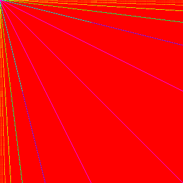 | 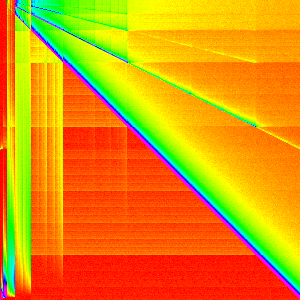 |
A quick sanity check to make sure our composition works shows that the composition graph is statistically indistinguishable from the normal Heap Sort graph (they are actually different due to random sampling).
| Compose(Heapify,Loop) | Heap Sort |
|---|---|
From this it is quite clear that heapify is the cause of the multiple lines and
the loop causes the crosshatching pattern. Notice that each line has a line that
has twice its slope and half its slope. If we changed, the binary heap to a ternary
heap or some higher d-ary heap. I would
expect the slopes to correlate because they come from swapping parents with children.
| Binary | Ternary | 4-ary |
|---|---|---|
| 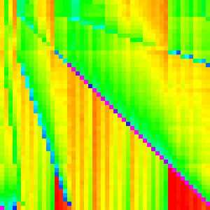 | 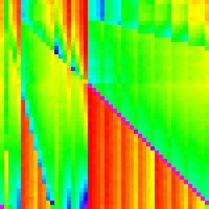 |
And it does.
The loop is a little harder to come to a good understanding of. The pattern on the
left is from moving the first most element to the end of the array in each iteration.
This causes arr[0] to always end up in arr[n-1]; subsequent iterations are not
that clear cut though because siftDown is called. There are still a few lines
like the ones in heapify, but they are overshadowed by the pattern on the top of
the main line which leads to the crosshatching pattern in the heap sort. 3
Looking at heap sort as a whole with this new understanding, may emphasize and explain the pattern in the bottom left. The exact reason the lines and the crosshatching patterns arise should also be much clearer.
Merge Sort
Merge sort merges (sorted) subarrays until it has merged the entire array.
There are two main ways of implementing merge sort: bottom-up and top-down. Originally I had implemented it top-down (because its slightly easier that way), but implemented it bottom-up to use the compose analysis on it (it is easier to separate analysis with loops rather than recursion) and because it is slightly more efficient (the browsers were more likely to implement it this way).
My bottom-up implementation I made was as follows:
function mergeSort(arr,comp){
// Create some tempporary storage
// Merging is not effecient to do in-place, so we need another array to merge into
var a1 = arr;
var a2 = new Array(arr.length);
// Merge all non-overlapping subarrays of width w for doubling w until w > n
for(let w = 1; w < arr.length; w *= 2){
for(let lo = 0; lo < arr.length; lo += 2*w){
// If hi > n, just copy a1[lo:n-1] to a2[lo:n-1]
let hi = lo+w;
if (hi >= arr.length) {
copy(a2, a1, lo, arr.length-1);
break;
}
// Merge a1[lo:hi-1] and a1[hi:max(hi+w,n-1)] into a2[lo:max(hi+w,n-1)]
var top = Math.min(lo+2*w,arr.length);
merge(a2,a1,lo,hi,top-1,comp);
}
// Swap which array we are copying from
[a1,a2] = [a2,a1];
}
// If we the sorted data is in the copy, move it back
if(a1 !== arr){
copy(arr,a1,0,arr.length-1);
}
}
function merge(a1,a2,lo,hi,top,comp){
var j = hi;
for(let i = lo; i <= top; i++){
if(lo >= hi){ // if the first subarray is empty
a1[i] = a2[j];
j++;
}else if(j > top){ // if the second subarray is empty
a1[i] = a2[lo];
lo++;
}else{
if(comp(a2[lo],a2[j])>0){ // otherwise compare and move the smaller one
a1[i] = a2[j];
j++;
}else{
a1[i] = a2[lo];
lo++;
}
}
}
}
function copy(a1,a2,lo,hi){
for(let i = lo; i <= hi; i++){
a1[i] = a2[i];
}
}
Like with heapsort separating the merge sort into discrete steps may give us greater
insight into the workings of the algorithm. Lets just expand for(var w = 1; w < arr.length; w *= 2){
and make a graph for each w. (This essentially graphing merge with the right parameters)
Note: not all ws are shown for sake of space.
| w | 1 | 4 | 32 | 128 |
|---|---|---|---|---|
| mergeStep(w) | 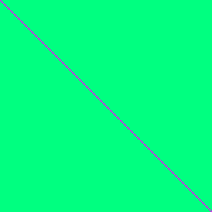 | 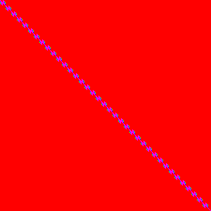 | 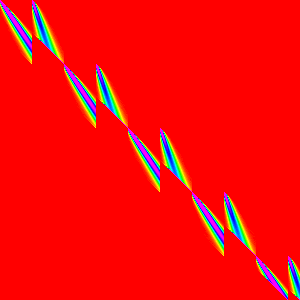 | 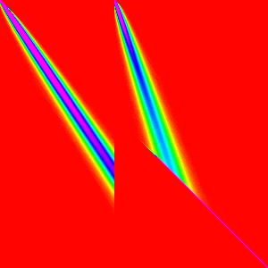 |
These should make sense; each loop is just merging subarrays of length w into
subarrays of length 2w. And each merge looks like the two streaks.
To better understand the merge pattern though, lets look only at the w=128 graph.
arr[0] and arr[128] are both likely to end up around arr[0] which accounts
for the start of the two streaks. Each element afterwards becomes more uncertain
and more likely to end up towards the end of the array. The vertical ending to
the first streak is just the boundary between the first subarray and the second.
and the diagonal cutoff for the second is because elements in the second array
cannot be merged behind their initial position because the rest of the second array
needs to fit there.
It is not quite clear how these build the final so lets compose some them in reverse order to try to better understand (Doing it in forward order will just give us things that look like merge sort).
IE rather than composing like ((AB)C)D and looking at each intermediate step. We
can do A(B(CD)) and look at each itermediate step. This is a valid method because
matrix multiplication is associative.
| w | (64-256) | (16-256) | (4-256) | (1-256) |
|---|---|---|---|---|
| steps in the range composed | 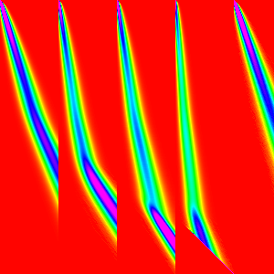 | 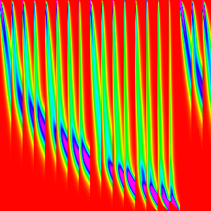 | 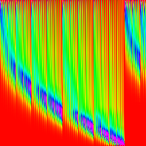 | 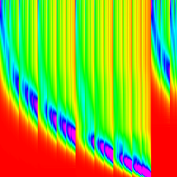 |
And that explains why the pattern in merge sort arises just from the graph of merge.
Quick Sort
Quick sort picks a pivot value (this is the largest difference between different quicksort implementations),partitions the array into two sections: elements greater than the pivot and elements less than pivot, and then quicksorts those subarrays.
The implementation I made was as follows:
function quickSort(arr,comp){
return quickSortRecurse(arr,comp,0,arr.length-1);
}
// Quicksort on a slice of the array
function quickSortRecurse(arr,comp,lo,hi){
// If lo >= hi, its sorted
if(lo < hi){
// Partition arr into (arr[lo:pivot-1] are < arr[pivot]) & (arr[pivot+1:hi] are >= arr[pivot])
let pivot = partition(arr,comp,lo,hi);
// Sort the two sub arrays
quickSortRecurse(arr,comp,lo,pivot-1);
quickSortRecurse(arr,comp,pivot+1,hi);
}
}
function partition(arr,comp,lo,hi){
// Pick the pivot value to be the top element;
var pivot = arr[hi];
var k = lo;
for(let i = lo; i < hi;i++){
// If the element is less than pivot, move it into arr[lo:k]
if(comp(arr[i],pivot) < 0){
[arr[i],arr[k]] = [arr[k],arr[i]];
k++;
}
}
// Move the pivot into its final place;
[arr[hi],arr[k]] = [arr[k],pivot];
// Return the index of pivot
return k;
}
Quick sort does a pretty good job of being hard to understand. We can’t use composition easily because it is recursive (with dependence on the comparator) and is generally quite even (there is only one major easy patterns to identify).
The right edge is where we selected the pivot from and is, as a result, different
from the rest. Because of the way it was implemented, where the pivot ended up is
where the first division happened. Looking at the graph, we can see it is most likely
to be around arr[n/3] with a pretty smooth distribution to both sides.
That pattern alone I believe is responsible for most of the pattern of the graph. In each recursive call, the location of the last index changes, but the pattern around it stays the same.
A more complex attempt at composition could give a more rigorous and meaningful analysis, but that would be a somewhat involved process and may not make it any clearer. So for the sake of time, it will be omitted.
Figuring out the implementations of Array.Sort
Now that we have a decent understanding of most of the major sorting algorithms, and how to interpret these graphs we can now begin to try to reverse engineer how Array.sort was implemented.
We will be looking at both the V8(Chrome) and SpiderMonkey(Firefox) implementations of Array.sort 4 5
| n | 10 | 30 | 50 | 100 | 300 |
|---|---|---|---|---|---|
| Chrome | 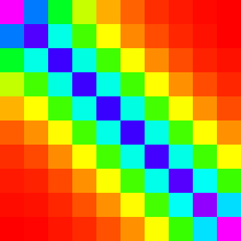 | 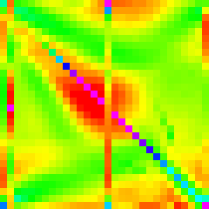 | 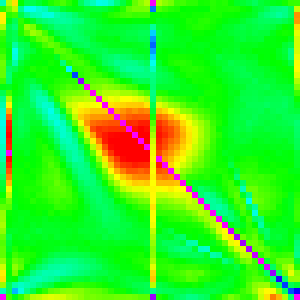 | 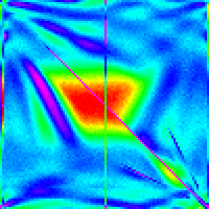 | |
| Firefox |
FireFox’s Implementation
Note: More recent versions of Firefox have a slighlty different sorting algorithm.
Just a quick reminder/reference, this is what the graphs for Firefox looked like.
| n | 10 | 30 | 50 | 100 | 300 |
|---|---|---|---|---|---|
| Firefox |
Out of the three main effecient sorting algorithms, which is most similar to these graphs? Heap and quicksort are clearly very different. However, merge sort has a sort of swept pattern that looks kind of like it; the intermediate steps for merge also look similar so it seems like a good bet.
n=10 shows an interesting pattern along the diagonal. It looks very similar to
insertion sort, but is restricted to 3x3 areas of the graph.
More formally, it looks like it was generated by something like:
// Runs Insertion sort on 3 wide sub arrays along the entire array
function boundedInsertionSort(arr,comp){
for(let i = 0; i < arr.length; i+=3){
insertCustom(arr,comp,i,1,Math.min(arr.length,i+3));
}
}
// Insertion sort with custom increment, initial position and end position
// Used for shell sort, merge-insert sort and quick-insert sort
function insertCustom(arr,comp,start,increment,end){
for(let i = start+increment; i < end; i+=increment){
for(let k = i; k-increment >= start; k -= increment){
if(comp(arr[k-increment],arr[k]) > 0){
let temp = arr[k];
arr[k] = arr[k-increment];
arr[k-increment] = temp;
}else{
break;
}
}
}
}
Which looks like
Why would Firefox be using insertion sort like this? Merge Sort can sort just fine on its own.
While I haven’t talked to any contributors about this, I am quite confident it is because merge sort is inefficient for small lists so insertion sort is taking care of the small ones then merge sort can take over when the subarrays are greater than 3.
Adding this pre-sorting to a bottom-up mergesort (top down with insertion sort applied as it is would be super messy) would look like:
// Mostly the same, but with a bounded Insertion sort first and a slight change to the outer for loop
function mergeInsertSort(arr,comp){
// Run insertion sort first
boundedInsertionSort(arr,comp);
var a1 = arr;
var a2 = new Array(arr.length)
// w starts at 3 now because it each every 3 element subarray is already sorted.
for(let w = 3; w < arr.length; w *= 2){
for(let lo = 0; lo < arr.length; lo += 2*w){
var hi = lo + w;
if (hi >= arr.length) {
copy(a2, a1, lo, arr.length-1);
break;
}
var top = Math.min(lo + 2*w,arr.length);
merge(a2, a1, lo, hi, top-1, comp);
}
var s = a1;
a1 = a2;
a2 = s;
}
if(a1 !== arr){
copy(arr,a1,0,arr.length-1);
}
}
Which looks like:
| n | 10 | 30 | 50 | 100 | 300 |
|---|---|---|---|---|---|
| Merge Insert |
Which is not right, it is still really close to the default merge sort. We need something to make merge sort more chunky and let the insertion sort shine through more.
Some Cheating (Looking at the source code)
I can’t infer from the graphs what the difference in our implementations is. So I am going to cheat a little and look at the source code of spider monkey.
Surprisingly, it is quite easy to find the sorting code by looking through the gecko repo on github. Just look at jsarray.cpp (The obvious place to look for Array methods) and see that MergeSort is called, but not defined in the file so it must be in one of the headers. ds/Sort.h seems quite promising. In there we find the definition of MergeSort and some helper methods.
And looking through, our implementation is strikingly similar to Spidemonkey’s (this may not be purely coincidental). It may be hard to see how the graphs are so different, when the implementations are so similar.
The one missing thing is this check6:
if (!lessOrEqual) {
/* Runs are not already sorted, merge them. */
Implementing that check in merge would lead to:
// Merge with a small optimization
function mergeOpt(a1,a2,lo,hi,top,comp){
var j = hi;
// Check to see if they are already merged
if(comp(a2[lo],a2[j])>0){
for(let i = lo; i <= top; i++){
if(lo >= hi){
a1[i] = a2[j];
j++;
}else if(j > top){
a1[i] = a2[lo];
lo++;
}else{
if(comp(a2[lo],a2[j])>0){
a1[i] = a2[j];
j++;
}else{
a1[i] = a2[lo];
lo++;
}
}
}
}else{
// If they are already merged, just copy them
copy(a1,a2,lo,top);
}
}
And when we run the Merge Insert Sort with this extra check,
| n | 10 | 30 | 50 | 100 | 300 |
|---|---|---|---|---|---|
| Merge Insert with Extra Check |
Which is nearly identical. Success!
And we only had to cheat a little. We were able to guess most of the implementation through this type of analysis, but it wasn’t immediately clear how to implement the last major difference. We could at least confirm if our implementation was nearly identical though.
Chrome’s implementation
Reminder of the Graphs
| n | 10 | 30 | 50 | 100 | 300 |
|---|---|---|---|---|---|
| Chrome |
Insertion sort is involved
For n=10 we can see that it is very similar if not identical to insertion Sort.
A quick test can show a comparison of Array.sort and insertion Sort around 10.
| n | 5 | 10 | 12 | 15 |
|---|---|---|---|---|
| Chrome | ||||
| Insertion |
As we can see, for n=5 and n=10, Array.sort looks indistinguishable from insertion
sort. But for n=12 and n=15, the patterns diverge. We can conclude from this that,
at least for first iteration (my guess is that its true for every iteration), if
n <= 10, insertion sort is being used instead of Quick Sort.
Quicksort is the main sort.
It is not very clear what main algorithm Chrome is using. It doesn’t look very much like any of the three. To me, it looks most like quicksort, but we would like to be more sure.
We can at least somewhat confirm this by showing that Chrome’s Array.sort is instable.
We can’t prove stability without testing all possible inputs (Proving stability of a black box algorithm is not possible, but if it was we would have used this to confirm Merge sort for firefox), but we can show instability. The following test for stability fails for chrome (because insertion sort is stable and is used for n < 10, we had to have an array longer than 10 elements).
var a = [[5,1],[5,2],[4,3],[4,4],[3,5],[3,6],[2,7],[2,8],[1,9],[1,10],[0,11],[0,12]];
a.sort((a,b)=>a[0]-b[0]);
// a is now [0,12],[0,11],[1,10],[1,9],[2,7],[2,8],[3,6],[3,5],[4,4],[4,3],[5,2],[5,1]
[1,10] and [1,9] swapped places and thus we know that it is not stable so, of
efficient, pure algorithms, only heap sort and quick sort are instable. As it should
be clear Array.sort is not using heapsort for the top level sorting algorithm, quick
sort must be the major algorithm in the implementation.
Partitioning algorithm
In the graphs of Array.sort, the first, middle and last elements all have a vertical line associated with them in the graph. So we can guess that the pivot value is chosen somehow from one of those three elements.
IE, the partition function is probably something like
function partition(arr,comp,lo,hi){
// f is some unknown function
var s = f(arr,lo,(lo+hi)/2), hi);
var pivot = arr[s]; //move the pivot to the top
arr[s] = arr[hi];
arr[hi] = s;
var k = lo+1;
for(let i = lo+1; i < hi-1;i++){
if(comp(arr[i],pivot) < 0){
[arr[i],arr[k]] = [arr[k],arr[i]];
k++;
}
}
// Put the pivot back in the middle
[arr[hi-1],arr[k]] = [arr[k],pivot];
return k;
}
My best guess for what the function f would be is picking the middle value. EG
function f(arr,lo,mid,hi){
// select the middle element when sorted by value of the array
return [lo,mid,hi].sort((a,b)=>arr[a]-arr[b])[1];
}
Best guess for Chrome’s implementation
Combining all the hints we have extracted thus far, we can get that chrome’s implementation is something like:
function quickInsertSort(arr,comp){
return quickInsertSortRecurse(arr,comp,0,arr.length-1);
}
function quickInsertSortRecurse(arr,comp,lo,hi){
if(lo+10 < hi){
// Same as before, but with a new partition
let pivot = partition2(arr,comp,lo,hi);
quickInsertSortRecurse(arr,comp,lo,pivot-1);
quickInsertSortRecurse(arr,comp,pivot+1,hi);
}else{
// If the range is <= 10, use insertion sort
insertCustom(arr,comp,lo,1,hi+1);
}
}
function partition2(arr,comp,lo,hi){
var pivot = setupPivot(arr,comp,lo,Math.floor((lo+hi)/2), hi);
//Pretty much the same as before, but with slightly different bounds
var k = lo+1;
for(let i = lo+1; i < hi-1;i++){
if(comp(arr[i],pivot) < 0){
[arr[i],arr[k]] = [arr[k],arr[i]];
k++;
}
}
// Put the pivot back in the middle
[arr[hi-1],arr[k]] = [arr[k],pivot];
return k;
}
function setupPivot(arr,comp,lo,mid,hi){
// Use the top bottom and middle as potential pivots
var a = arr[lo];
var b = arr[mid];
var c = arr[hi];
// Sort a, b and c
if(comp(a,b) > 0){
[a,b]=[b,a]
}
if(comp(a,c) >= 0){
[a,b,c]=[c,a,b];
}else{
if (comp(b, c) > 0) {
[b,c]=[c,b];
}
}
// Put the top and bottom values back
arr[lo] = a;
arr[hi] = c;
// And use the median as the pivot
[arr[mid],arr[hi-1]] = [arr[hi-1],b];
return b;
}
This doesn’t quite follow the things I laid above for a few reasons:
- I don’t want to be using
[].sortin my implementation so I inlined that - For simplicity, I changed
fto put the pivot on top and just return the pivot - Optimized a little by placing the non-pivot values on the right side of the pivot and did not include them in the main partition.
This algorithm looks like:
| n | 10 | 30 | 50 | 100 | 300 |
|---|---|---|---|---|---|
| Quick Insert + new Partition |
Ok, that is definitely much closer than a pure quicksort. For n=10 we get the
insertion Sort as expected and we now do have those vertical lines at the bottom,
midpoint and top. However, we are still missing something, the big red spot in the
middle of the Array.sort graph is completely absent in this one.
Though, we can at least deduce one more thing about Chrome’s implementation. Note the double bar in our algorithm on the right vs the double bar on the left in Chrome’s implementation.
| Quick Insert Sort | Array.sort |
|---|---|
So we know that chrome is partitioning putting the pivot on the bottom rather than the top. Changing that doesn’t make a significant difference though.
Like with Firefox’s Implementation, it looks like its not trivial to guess how to make our current guess better.
Some more Cheating
Like with FireFox’s source, v8’s source is also on Github. Then looking in the most obvious file array.js, we find InnerArraySort which implements Array.sort. There are a bunch of extra checks in that function, but we only really care about up till line 841. Disregarding GetThirdIndex and some checks, we have effectively identical code up to line 805.
Note that:
while (true) {
// Insertion sort is faster for short arrays.
if (to - from <= 10) {
InsertionSort(a, from, to);
return;
}
//...
//...
if (to - high_start < low_end - from) {
QuickSort(a, high_start, to);
to = low_end;
} else {
QuickSort(a, from, low_end);
from = high_start;
}
}
is essentially just inlining the tail call of
function quickInsertSortRecurse(arr,comp,lo,hi){
if(lo+10 < hi){
let pivot = partition3(arr,comp,lo,hi);
quickInsertSortRecurse(arr,comp,lo,pivot-1);
quickInsertSortRecurse(arr,comp,pivot+1,hi);
}else{
insertCustom(arr,comp,lo,1,hi+1);
}
}
The main difference is in the partitioning step (which is the meat of Quick Sort). Chrome is using a more complex partition (which is somewhat hard to understand due to optimizations) which is partitions the array into three pieces (less than pivot, equal to pivot, and greater than pivot); ours simply partitions into two (less than, and greater than or equal to).
Reworking our partition (and recursive method) to account like the following should give us a very similar graph to Chrome’s implementation.
function quickInsertSort2(arr,comp){
return quickInsertSort2Recurse(arr,comp,0,arr.length-1);
}
function quickInsertSort2Recurse(arr,comp,lo,hi){
if(lo+10 < hi){
let [a,b] = partition3(arr,comp,lo,hi);
quickInsertSort2Recurse(arr,comp,lo,a-1);
quickInsertSort2Recurse(arr,comp,b+1,hi);
}else{
insertCustom(arr,comp,lo,1,hi+1);
}
}
function partition3(arr,comp,lo,hi){
var pivot = setupPivot(arr,comp,lo,Math.floor((lo+hi)/2), hi);
var eqlo = lo+1, eqhi = hi-1;
for(let i = lo+2; i <= eqhi;i++){
let c = comp(arr[i],pivot);
if(c < 0){
// Move arr[i] below the equal range
[arr[eqlo],arr[i]] = [arr[i],arr[eqlo]];
eqlo++;
}else if(c > 0){
// Move arr[i] above the equal range
[arr[eqhi],arr[i]] = [arr[i],arr[eqhi]];
eqhi--;
// The value at arr[i] has not yet been processed so stall the loop
i--;
} // If c === 0, do nothing, it is in the right place
}
// State of sub array:
// [lo:eqlo) is less than pivot
// [eqlo:eqhi] is equal to pivot
// (eqhi:hi) is greater than pivot
return [eqlo,eqhi];
}
| n | 10 | 30 | 50 | 100 | 300 |
|---|---|---|---|---|---|
| Quick Insert + new new Partition |
And it does. Success.
One question that this raises though is how much does insertion sort play a role in defining the shape of the graph
Interesting aside:
Changing the cutoff for using insertion sort can perhaps help us understand why this patterns occurs.
| 20 | 30 | 40 | 50 |
|---|---|---|---|
Final Words
By using a random comparator we were able to see into the black box of Array.sort implementation and do a decent job of reverse engineering. This technique has many parallels to Fuzz Testing; the main difference is that we are not trying to make the software error and instead are seeing what the undefined behaviour looks like. By comparing to known algorithms, we can get most of the way to understanding what is happening inside the black box. Getting to an exact match of the implementation may be hard to do, but if achieved through some separate method. This method can validate much of the behaviour of the reproduced algorithm.
On a slightly different note, this method also allows us to “see” logical equivalences. Two methods that may have very similar code, but a slight difference such as an extra if, might generate very different graphs.
Hints for applying this type of technique to other types of problems:
- Find undefined behaviour that would differentiate algorithms
- All sorting algorithms give the same final result (disregarding stability) if the comparator fulfills a few conditions (reflexive, antisymmetric, transitive)
- Randomness abuses all three and thus the output is undefined
- Find a way to visualize or aggregate the data
- Implement several algorithms and test them to understand patterns
Next Steps
Some possible ways to build off this:
- Try using a different random comparator eg make it change the probabilities of 1 -1 and 0
- Try testing other sort implementations such as Opera’s and Edge/IE’s
- A Pull Request for this would be welcomed
- Try having the comparator only sometimes be random
Appendix: More Hybrid Sorts
Here are a few more sorts I implemented, but didn’t fit well into the flow of the general article (made it too long). However they interesting (and pretty) so I will include them here. Analysis will be foregone for sake of space and my time.
As this is on Github, if you feel like adding an interesting hybrid sort here, feel free to make a Pull request to add it.
| n | 10 | 30 | 50 | 100 | 300 |
|---|---|---|---|---|---|
| Shell Sort | |||||
| Comb Sort | |||||
| Cocktail Sort |
- A correct way to do this is with Fisher-Yates Shuffle [return]
- Alternatively it can be thought of as a stochastic matrix [return]
- Further composition analysis could be done on the internals on the loop [return]
- For these tests Chrome is Version 61; Firefox is Version 45. [return]
- For non-built in methods assume Chrome was used (becuase automatic downloading doesn’t work in Firefox), but it should not change any results as the Javascript sorts should perform identically. [return]
- Note this check simply allows it to be slightly faster than the naive implementation, it does not affect correctness (assuming that the comparator is transitive ie ((a > b), (b > c) -> (a > c))) or Big O runtime. [return]